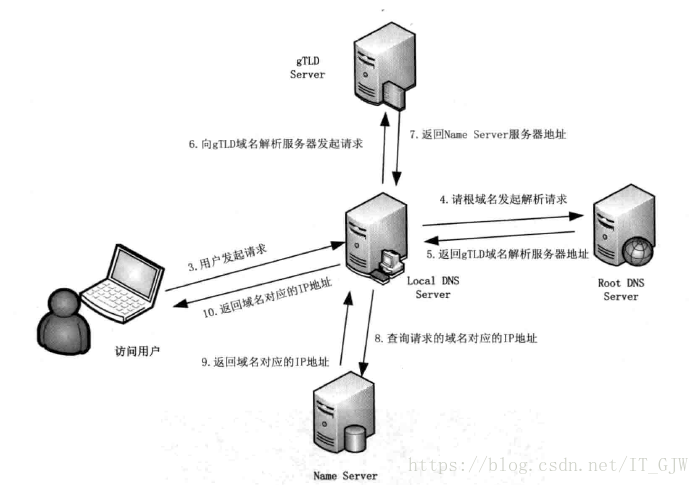
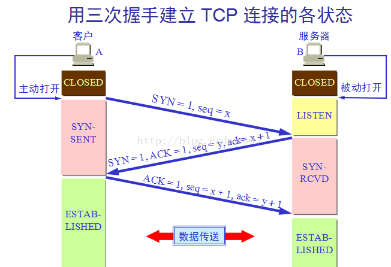

当你在浏览器地址栏输入一个URL后回车，将会发生的事情？这是一道经典的面试题，同时也是一道复杂的题目，涉及到很多东西，不同的软件开发者对于此道问题有不同的答案，对于其中的某一点也能无限深究，今天我们就来侧重于web前端来看一下究竟发生了什么。
基本流程：
①查询ip地址
②建立tcp连接，接入服务器
③浏览器发起http请求
④服务器后台操作并做出http响应
⑤网页的解析与渲染
一. 浏览器解析出url中的域名
url由通信协议+域名+端口号+资源路径组成，浏览器需要从url中解析要请求的域名
二. DNS解析
找到域名对应的IP地址，该过程分为如下10步：
查询浏览器的DNS缓存
若浏览器缓存中未找到该域名对应的ip，则查找操作系统的DNS缓存，即hosts文件中的域名与ip的映射关系
若在操作系统缓存中也没有找到，则查找本地DNS服务器缓存。
若本地DNS缓存中仍然没有找到，则直接请求Root Server域名服务器
根域名服务器返回给本地服务器一个所查询域的主域名服务器（gTLD Server）地址，gTLD是顶级域名服务器，如 .com、.cn、.org 等。
本地域名服务器向上一步返回的gTLD服务器发送解析请求。
gTLD接受请求查找并返回此域名对应的Name Server域名服务器的地址
本地域名服务器向Name Server域名服务器发送解析请求，Name Server域名服务器找到该域名对应的ip，连同一个TTL值返回给本地域名服务器。
本地域名服务器缓存该域名和ip的对应关系，缓存时间由TTL的值控制。
把解析结果返回给用户，用户根据TTL值进行缓存。

三. 客户端与服务器建立TCP连接
通过三次握手，建立了客户端和服务器之间的连接
第一次握手：客户端向服务器端发送请求（SYN=1） 等待服务器确认；
第二次握手：服务器收到请求并确认，回复一个指令（SYN=1，ACK=1）；
第三次握手：客户端收到服务器的回复指令并返回确认（ACK=1）。

四. 浏览器与服务器进行数据传输
浏览器向服务器发送http的请求报文，浏览器从服务器读取响应报文，然后浏览器关闭连接。
五. 浏览器渲染页面
客户端拿到服务器端传输来的文件，找到HTML和MIME文件，通过MIME文件，浏览器知道要用页面渲染引擎来处理HTML文件。
- 浏览器会解析html源码，然后创建一个 DOM树。
在DOM树中，每一个HTML标签都有一个对应的节点，并且每一个文本也都会有一个对应的文本节点。
- 浏览器解析CSS代码，计算出最终的样式数据，形成css对象模型CSSOM。
首先会忽略非法的CSS代码，之后按照浏览器默认设置——用户设置——外链样式——内联样式——HTML中的style样式顺序进行渲染。
- 利用DOM和CSSOM构建一个渲染树（rendering tree）。
渲染树和DOM树有点像，但是是有区别的。
DOM树完全和html标签一一对应，但是渲染树会忽略掉不需要渲染的元素，比如head、display:none的元素等。
而且一大段文本中的每一个行在渲染树中都是独立的一个节点。
渲染树中的每一个节点都存储有对应的css属性。
- 浏览器就根据渲染树直接把页面绘制到屏幕上。